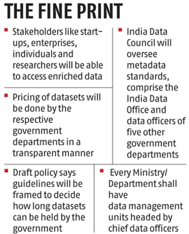

Ministry of Electronics and Information Technology
Draft India Data Accessibility & Use Policy 2022: Highlights
Relevant to All Mahindra Businesses
Introduction
The draft of “India Data Accessibility & Use Policy, 2022” has been released on 21st February 2022 for public consultation and comments have been invited till 18th April, 2022. The policy document provides an update to the existing government policies — the National Data Sharing and Accessibility Policy (NDSAP) and the Open Government Data Platform (OGD) India.
The policy objectives mentioned in this draft are primarily commercial in nature. It aims to radically transform India’s ability to harness public sector data.
Earlier, a government committee headed by Infosys co-founder Kris Gopalakrishnan has suggested that non-personal data generated in India be allowed to be harnessed by various domestic companies and entities.
Stated Objectives
-
To enhance access, quality, and use of data in line with the current and emerging technology needs of the decade
-
To improve the policy making, evaluation and monitoring
-
To enhance the efficiency of service delivery
-
To streamline inter-governmental data sharing
-
To facilitate the creation of public digital platforms
-
To promote transparency, accountability and ownership in data sharing and release.
-
To promote interoperability and integration to enhance data quality and usability
-
To increase the availability of high value datasets for national importance.
Objectives
-
To develop entrepreneurs in agri exports
-
To diversifying the export basket to boost high-value and value-added agricultural exports.
- To provide an institutional mechanism for pursuing market access
- To tackle barriers and deal with sanitary and phytosanitary issues.

Need for Policy
-
Increased Data: The generation of citizen data is slated to increase exponentially in the next decade and become a cornerstone of India’s USD 5 trillion-dollar digital economy.
-
Benefits of Data Exploitation: The National Economic Survey, 2019 noted the commercial benefits of Government data exploitation.
- The private sector may be granted access to select databases for commercial use.
-
Absence of Policy: A background note that accompanies the policy outlines existing bottlenecks in data sharing and use.
- It includes the absence of a body for policy monitoring and enforcement of data sharing efforts, absence of technical tools and standards for data sharing, identification of high value datasets and licensing and valuation frameworks.
-
To Unlock High Value Data: It indicates a way forward to unlock the high value of data across the economy, congruent and robust governance strategy, making Government data interoperable and instilling data skills and culture.
Salient Features
-
India Data Office: The document proposes the establishment of an India Data Office (IDO) to streamline and unify data access and sharing among government and other stakeholders.
- It will define frameworks for high-value data sets, finalise data standards and metadata standards and review policy implementation, among others.
-
Every ministry or department should have Data Management Units, headed by Chief Data Officers, which will work closely with the IDO to ensure the implementation of this policy.
-
Coverage: All data and information generated, created, collected, or stored by the central government and authorised agencies shall be covered by the policy. The measures can also be adopted by state governments.
-
Restricted Data: All government data will be open and shareable unless it falls under a negative list of data sets.
- Data categorised under the negative list of datasets that won’t be shared, and restricted access and shared only with trusted users, as defined by the respective ministry or department, under the controlled environment.
-
Data Toolkit: All ministers or departments will receive a data-sharing toolkit to help assess and manage risk associated with data sharing and publication.
-
The framework will assist data officers in determining whether a data set qualifies for release, restricted sharing, or must be placed on the negative list, as well as the proper release channel and degree of anonymity required.
-
Aligned to Existing Laws: Data shall remain the property of the agency/ department/ ministry/ entity which generated/collected it. Access to data under this policy shall not be in violation of any acts and rules of the government of India in force.
-
The legal framework of this policy shall be aligned with various acts and rules covering the data.
Issues
-
Privacy: India does not have a data protection law (Data Protection Bill) that can provide accountability and remedy for privacy violations such as coercive and excessive data collection or data breaches.
- Here, inter-departmental data sharing poses concerns related to privacy since the open government data portal which contains data from all departments may result in the creation of 360-degree profiles and enable state-sponsored mass surveillance.
-
Even though the policy considers anonymisation as a desired goal there is a lack of legal accountability and independent regulatory oversight.
-
There is also a failure to consider scientific analysis and the availability of automated tools for the re-identification of anonymous data.
-
The commercial value of the data increases with greater amounts of personal data. The absence of an anchoring legislation further leads to the policy not being able to fulfil the threshold of legality for state intervention into privacy which was put in place by the Supreme Court of India in its landmark right to privacy decision (K.S. Puttaswamy v. Union of India i2017).
-
Transparency: While adopting the language of open data it strays from its core principle of providing transparency of the Government towards its citizens.
- There is only one mention of transparency and little to no mention of how such data sharing will help ensure demands for accountability and redress.
-
Perverse Revenue Objective: The second issue is that the policy bypasses parliament as it contemplates large scale data sharing and enrichment that will be borne from public funds.
- Further, the constitution of offices, prescription of standards that may be applicable not only to the Central government, but even State governments and schemes administered by them require legislative deliberation.
-
Federalism: The policy, even though it notes that State governments will be, “free to adopt portions of the policy,” does not specify how such freedom will be achieved.
- It becomes relevant, if specific standards are prescribed by the Central government for data sharing, or as a precondition to financial assistance.
-
There is also the absence of any comment on whether data gathered from States may be sold by the Central government and whether the proceeds from it will be shared with the States.
-
Lack of Clarity on Definitions for Key Concepts: New concepts introduced by the Policy have been defined in a vague and ambiguous manner which opens them up to misinterpretation.
- The Policy creates a separate category of ‘High-Value Datasets’ which it deems essential for governance and innovation, access to which will be accelerated.
-
However, nowhere in the Background Note or the Policy has the category been concisely defined.
Conclusion:
Although this draft policy aims to create searchable database, India does not have data protection law that can provide accountability and remedy for privacy violations such as coercive and excessive data collection or data breaches. The inter-departmental data sharing poses concerns related to privacy which may result into state-sponsored mass surveillance